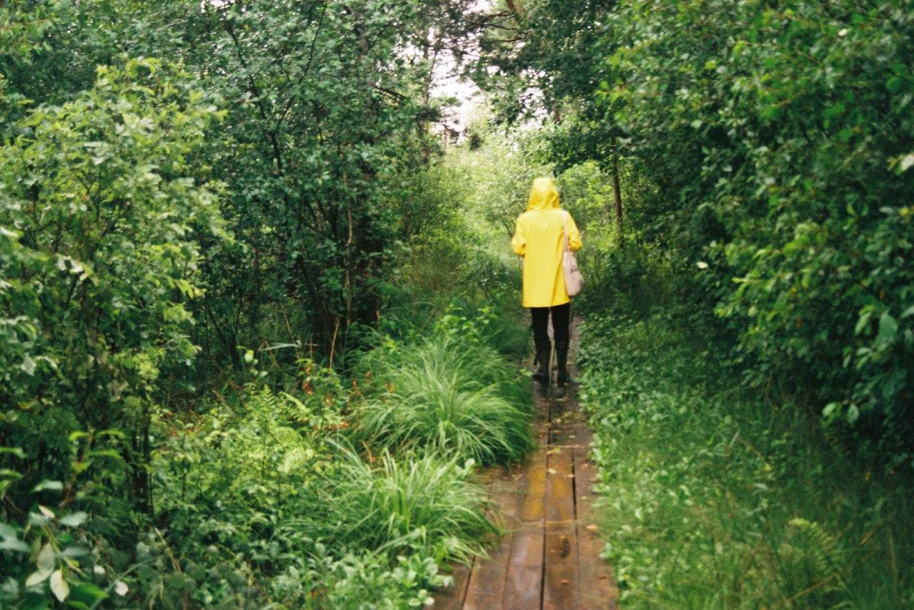
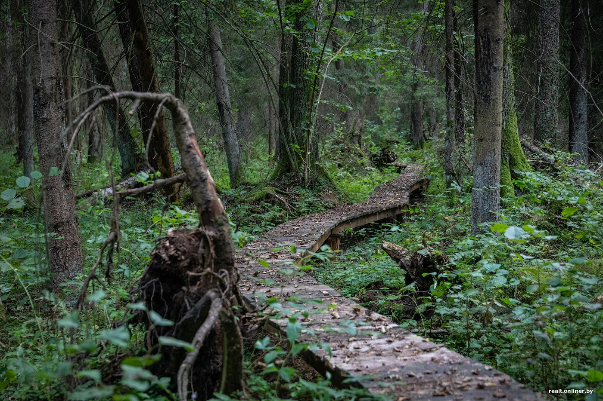
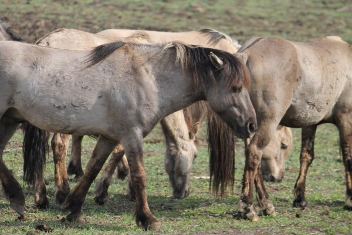
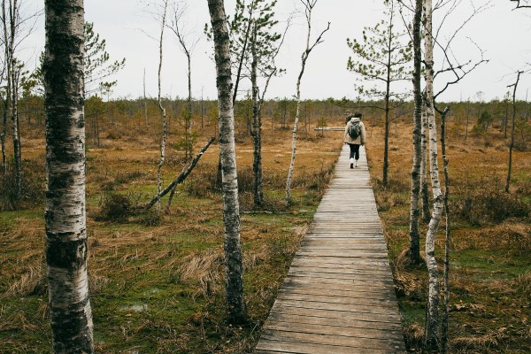
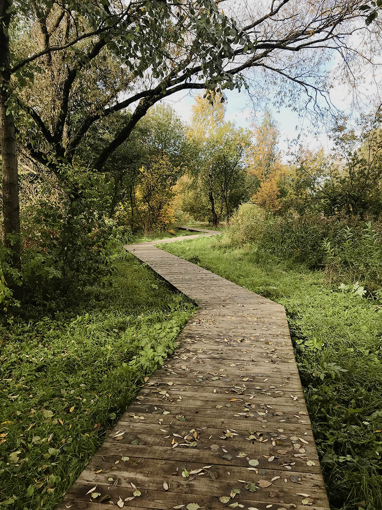
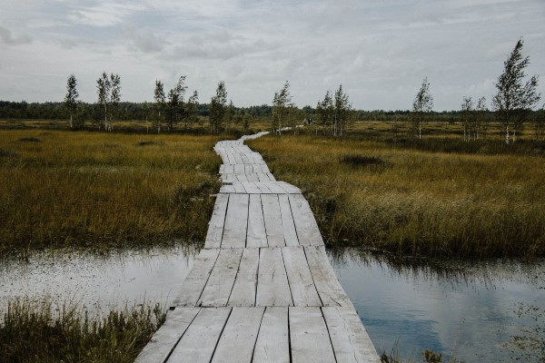

Экотропы Беларуси
Найди свое идеальное местоРекомендуемые экотропы
Что такое экотропы?
Экологическая тропа, или просто «экотропа», – это специально подготовленный прогулочный или туристический маршрут на особенно интересных природных территориях.
Обычно такие маршруты создаются в уникальных природных местах, рукотворных историко-культурных или просто примечательных природных объектах (парки, заповедники, заказники).
В Беларуси насчитывается целых 70 таких маршрутов, различной степени оборудованности и удалённости от крупных городов.
Удобнее всего добираться до маршрутов на личном автомобиле, потому что на общественном транспорте дорога будет либо неоправданно долгой, либо практически невозможной.
В общем, бери друзей и выдвигайся на поиски своего любимого уголка в Беларуси.
Фильтр по областям
-

Ольманские болота
Столинский район, Брестская область 1,5 км -

«Надливская гряда»
Ивацевичский район, Брестская область 2 км -

«Сябрыньский перекресток»
Ивьевский район, Гродненская область 1 км -

«По лесной заповедной тропе»
Лепельский район, Витебская область 3 км -

«Чижовка»
Минск 1 км -

«Озеравки-Ельня»
Миорский район, Витебская область 1,5 км
тропки.бай
Тропки.бай - это команда путешественников-любителей, которым не сидится на одном месте, постоянно хочется чего-то нового, необычного и интерессного.
Наша цель - собрать как можно больше захватывающих мест и маршрутов по Беларуси, а также поделиться ими с каждым, кто в этом заинтересован, дать возможность побывать в местах, о которых многие даже и не слышали!
Мы будем рады, если благодаря нашей информацации Вы откроете для себя новые места, получите незабываемые эмоции, проведёте своё время с удовольствием.
Но всего этого может не быть, если ничего не делать. Поэтому скорее собирай компанию, выбирай направление и вперёд, за новыми приключениями!
Настало время путешествовать
Зарядись мотивацией из нашего короткого ролика Ссылка на просмотр видео во всплывающем окнеДругие популярные локации в Беларуси
Поддержка
Если ты нажал на кнопку поддержки, значит тебе небезразлична судьба нашего проекта, который мы делаем абсолютно на безвозмездной основе.
Именно поэтому каждый вклад ещё больше мотивирует и дальше собирать крутые маршруты для путешествий по Беларуси, а также открывает перед нами дополнительные возможности, которые раньше ограничивались финансами.
Мы ни к чему не призываем и ничего не просим, но если у Вас есть желание поддержать проет, можно это сделать пожертвовав любую сумму.
Можешь быть уверен, что каждый переведённый рубль будет израсходован исключительно в целях развития проекта.
Спасибо!